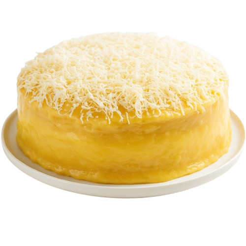
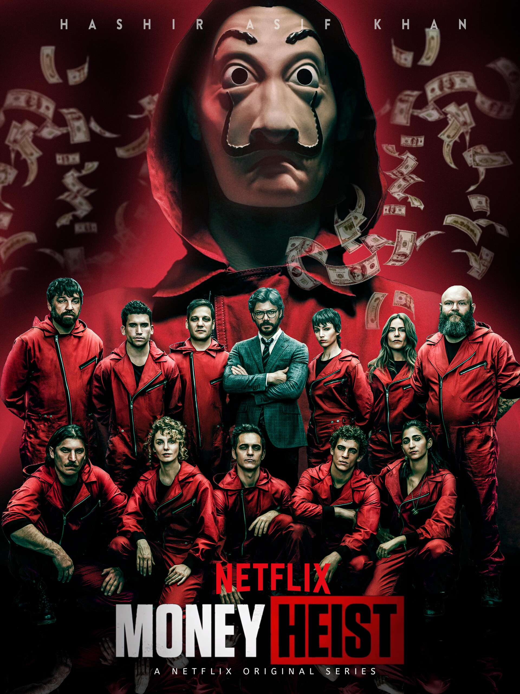
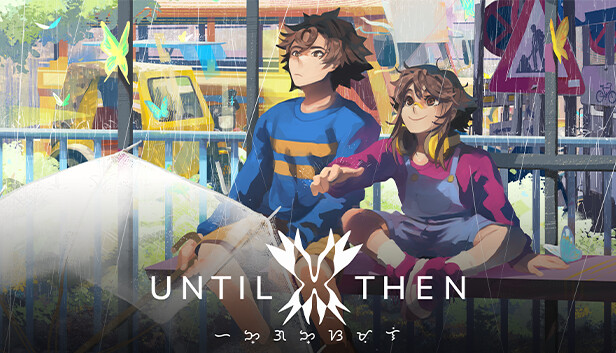

Yoo!! I'm a lazy guy who doesn't touch grass, I'm always isolated in my house 😜.
This blog will show you a little bit of info about me.
I’m a lazy guy at heart, but my curiosity drives me to explore the ever-changing world of technology.
While I may take things slow, I’m always eager to learn, experiment, and discover how tech shapes our future.
My Favorite Food
Yema Cake
I love yema cake because it’s soft, sweet, and comforting.
The fluffy sponge paired with the rich, creamy yema topping
creates the perfect balance of texture and flavor. Every bite feels like a treat that reminds me of home and simple joys.

Favorite Movie
Money Heist
My favorite movie is Money Heist because it’s full of suspense, clever strategies, and unexpected twists that keep me hooked.
I admire how the characters aren’t just thieves, but people with deep stories and emotions.
The way the Professor plans everything with precision makes the story thrilling, and the teamwork, loyalty, and sacrifice shown by
the group make it more than just a heist—it’s about family and resistance.

Favorite Game
Until Then
I like the Filipino game Until Then because it beautifully combines storytelling, culture, and emotion in a way that feels close to home.
Its pixel art and everyday Filipino settings, like jeepneys and school hallways, make the game relatable while still feeling unique and artistic.
The story is heartfelt and mysterious, tackling themes of friendship, loss, and identity, which makes it more than just a game—it’s an emotional journey.
What I love most is how it represents Filipino life authentically, turning simple daily moments into something meaningful and unforgettable.

My Favorite Youtuber
I WATCH THIS GUY BECAUSE HE IS FUNNY YET INFORMATIVE!